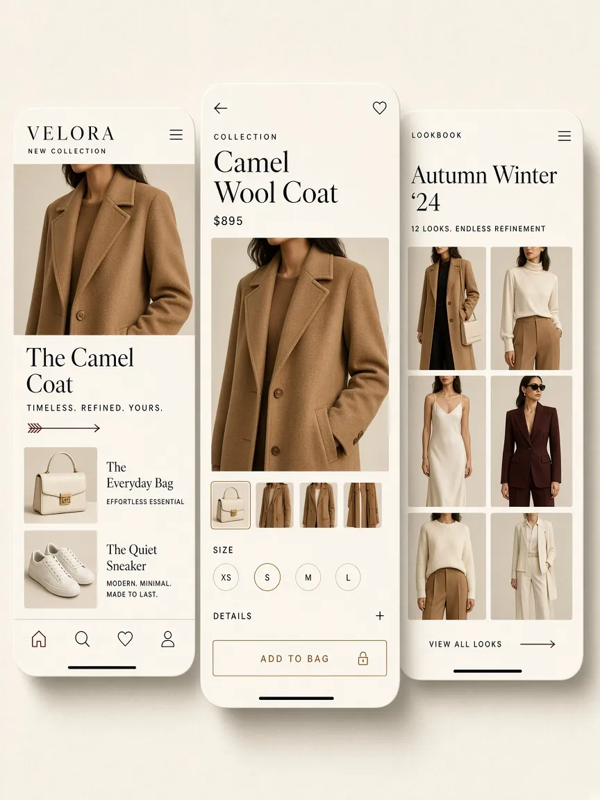

Концепт
Velora
Дизайн-концепция магазина одежды. Три экрана: витрина, карточка товара, лукбук.
01 — Overview
Обзор
Концептуальный проект. Собрал поток покупки в три экрана: editorial-витрина, товар с размерами, лукбук коллекции.
02 — Задача
Цель проекта
Показать магазин без шума: сначала вещь и материал, потом размер и действие. Цена не спорит с фото.
03 — Моя роль
Моя роль
UI/UX. Структура экранов, сетка, типографика и состояния покупки.
04 — Решение
Решение
Одна светлая поверхность, антиква в заголовках, узкий гротеск в интерфейсе. Крупное фото, размер на виду, одна кнопка «Add to bag».
05 — Процесс
Процесс
Сначала поток: витрина → товар → лукбук. Затем ритм сетки и иерархия: фото, имя, размер, действие. Это дизайн-концепция, не клиентский релиз.
06 — Экраны
Основные экраны

07 — Результат
Результат
Готовая визуальная система трёх экранов. Без выдуманных метрик и запуска в прод — концепт интерфейса.